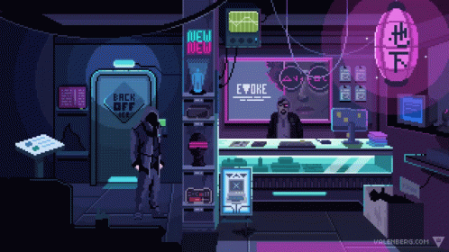

So, you want to get into PC gaming. You want to join the race of PC gamers. Then this guide to how to put together a good PC will get you started...
𝙋𝙧𝙞𝙘𝙞𝙣𝙜 𝙖𝙣𝙙 𝘽𝙪𝙙𝙜𝙚𝙩𝙨
One of the many perks of gaming on a PC rather than any other machine is that you have a choice of what you can put in your machine and how much you spend on cetain parts and if you want to spend more on one aspect of the PC and spend les on some others. However there are many parts to a PC that you probaly shouldnt cheap out on and parts that you can spend less money on. Here is a list of price points of different ranges of PC types:
£𝟏𝟎𝟎 - £𝟓𝟎𝟎= Low End (Very Affordable)
£𝟓𝟎𝟎 - £ğŸğŸğŸğŸ= Mid-Range (Fairly Affordable)
£ğŸğŸğŸğŸ - £ğŸğŸğŸğŸ= High-End (Fairly Expensive)
£ğŸğŸğŸğŸ - £𝟓𝟎𝟎𝟎= Very High-End (Very Expensive)
£𝟓𝟎𝟎𝟎 - £𝟏𝟎,𝟎𝟎𝟎+= Exclusive (Most Expensive)
When putting together a PC there are around 9 to 10 parts that need to be bought to build the PC:
𝑹𝑨𝑴,
𝑪𝑷𝑼,
𝑮𝑷𝑼,
𝑴𝒐𝒕𝒉𝒆𝒓𝒃𝒐𝒂𝒓𝒅,
𝑷𝑺𝑼
𝑺𝑺𝑫 𝒐𝒓 𝑯𝒂𝒓𝒅 𝑫𝒓𝒊𝒗𝒆,
𝑪𝒂𝒔𝒆,
𝑨𝑰𝑶 𝒐𝒓 𝑾𝒂𝒕𝒆𝒓 𝑪𝒐𝒐𝒍𝒊𝒏𝒈 (𝑶𝒑𝒕𝒊𝒐𝒏𝒂𝒍),
𝑶𝒑𝒆𝒓𝒂𝒕𝒊𝒏𝒈 𝑺𝒚𝒔𝒕𝒆𝒎
Do keep in mind what you will be doing most on the computer. I reccomend that if you are mainly doing rendering or video editing or things that might include the Adobe Creative Cloud or Blender then you want to be spending more money on the 𝑪𝑷𝑼 (central processing unit) than anything else. However if you will be using the machine for mainly gaming the I reccomend that you want to be spending more money on the 𝑮𝑷𝑼 (graphics processing unit) than anything else. The reason for all of this is that the CPU is like the brain of the computer and is needed for creating things and loading and rendering things quickly. But on the other hand, the GPU is needed for puuting out high quality visuals and providing you with high frame-rates in game. Most normal, everyday computers dont have a GPU but almost all gaming computers do
Now lets talk about the other parts. The 𝑹𝑨𝑴 (random access memory) are the two rectangular sticks that slot into somthing called a dim slot on the 𝑴𝒐𝒕𝒉𝒆𝒓𝒃𝒐𝒂𝒓𝒅. The ram carries out processes for the PC and it is the PCs short-term holder of data. The more programs that you have running, the more memory you will need (you can also call RAM memory). I reccomend that you have at least 8GB of RAM for your computer to run comfotably. The 𝑴𝒐𝒕𝒉𝒆𝒓𝒃𝒐𝒂𝒓𝒅 is the main connector for the PC and it connects all of the parts together and mounts on the inside of the PC 𝑪𝒂𝒔𝒆. The 𝑷𝑺𝑼 (power supply unit) is what let the PC have power and converts main AC to low-voltage DC voltage so that all of the parts of the PC are not overloaded with too much power, because that becomes dangerous and can cause fire. As I said eirlier, the PSU is one of the parts (including the motherboard) that you dont want to be cheaping out on and you should always aim to have a Power Supply that a is at least 80+ Gold.

Always check the label for the 80+ sticker
The 𝑺𝑺𝑫 (solid state drive) or 𝑯𝒂𝒓𝒅 𝑫𝒓𝒊𝒗𝒆 is the long term memeory of the PC and contain everything that you download onto the PC. Once the Hard Drive or SSD is ful you either need to delete some of the content on it or buy some more storage. I would reccomend having at least 1TB of free storage for your computer and having your operating system on you fastest peice of storage. I would also reccomend getting an SSD because it is way faster than a Hard Drive and SSDs are cheaper than what they used to be. However, they still are more expensive than a Hard Drive. In a ideal setup you should have an SSD with your 𝑶𝒑𝒆𝒓𝒂𝒕𝒊𝒏𝒈 𝑺𝒚𝒔𝒕𝒆𝒎 installed on it and a large Hard Drive with your appplications and games library installed on it and then some portable storage to keep projects and files on. Or one big SSD with everything on it, if you have the money. The 𝑪𝒂𝒔𝒆 should be the right sixe for all of your components and would usually be a mid-tower but if you want a more minimalist look, you can have a micro ATX case like my favorite, the motif monument. The 𝑨𝑰𝑶 𝒐𝒓 𝑾𝒂𝒕𝒆𝒓 𝑪𝒐𝒐𝒍𝒊𝒏𝒈, which I say is optional beacause your CPU will usually come with a stock cooler and your case will have fans built in plus water cooling is very expensive (AIOs arnt). You shuld try and get a water cooler or AIO that is the same brand as your case because then they will be eisier to use and there wont be fitting problems. Now for the 𝑶𝒑𝒆𝒓𝒂𝒕𝒊𝒏𝒈 𝑺𝒚𝒔𝒕𝒆𝒎. If you want normal windows for your PC then at the muinite I would buy Windows 10 Pro from G2A you can get Windows for free though but it will have a watermark and many features will be restricted because it will be unactivated.

However if you want full, unrestiricted access to you computer and want to make you computer modigied to you and dont want to have to pay for an operating system the you can download linux for free. If you already have a MAC though then you can put the Mac OS on it or you can virualise it.